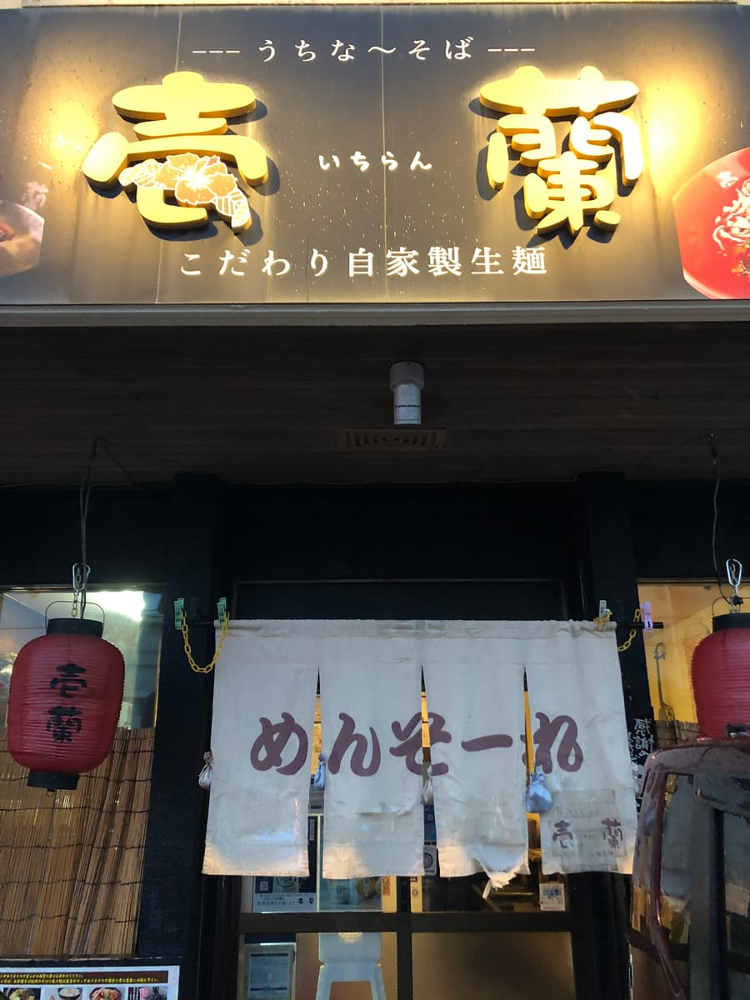
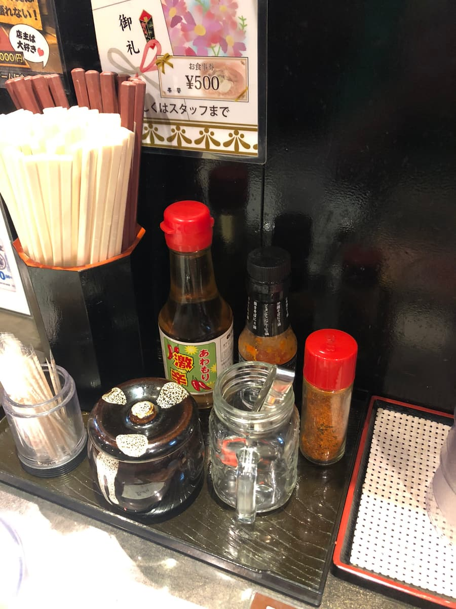
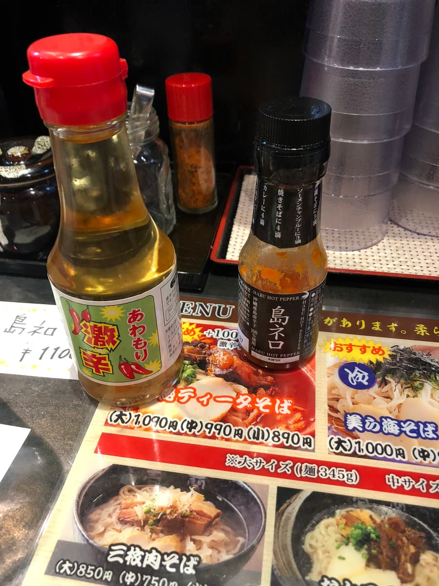
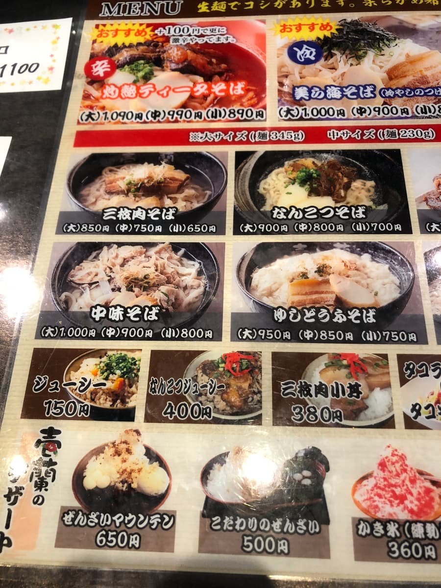
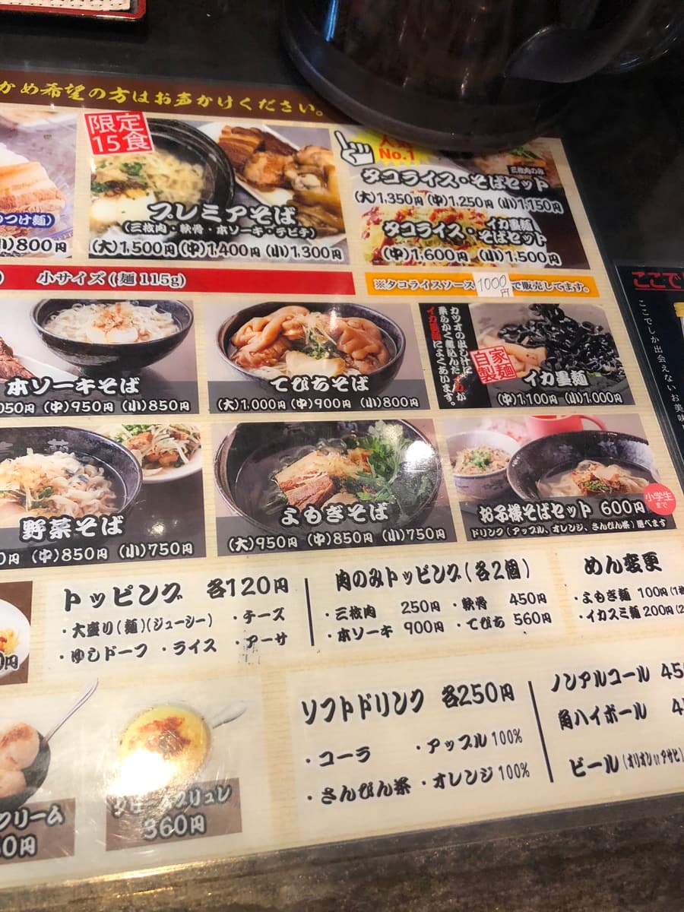
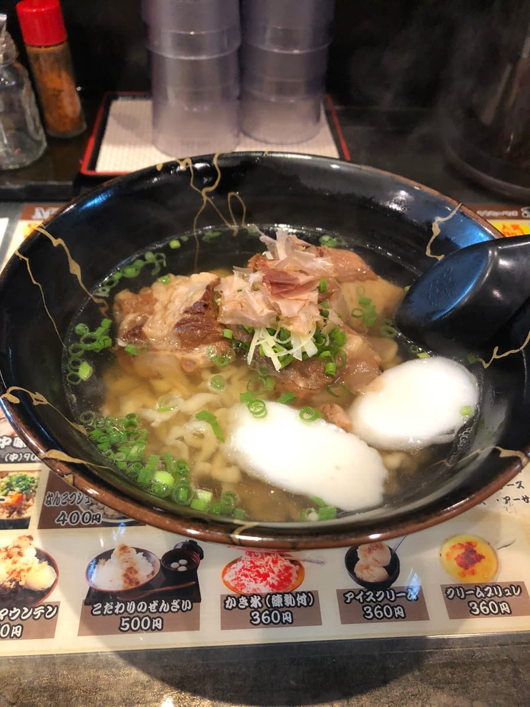
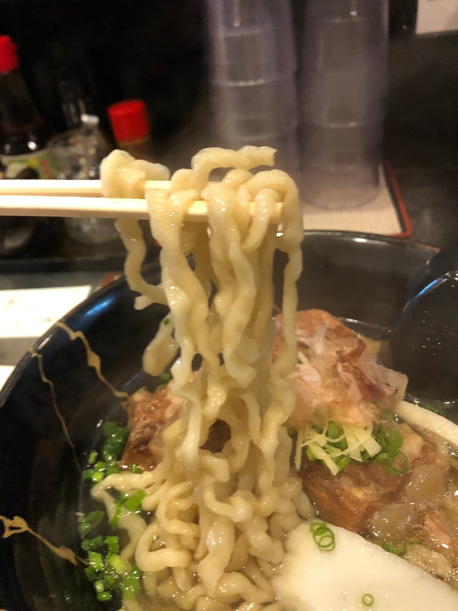

※이 글은 Claude 3.5 Sonnet AI로 작성한 것에 일부 덧붙여 썼습니다.
2024년 9월에 먹었습니다😄 이번에는 이토만시 니시자키에 있는 '이치란'을 소개합니다!
'우치나 소바'가 떠오르는 가게 이름은 아니죠. 완전히 라멘 가게 분위기를 풍기고 있습니다😄 가게 이름에 맞춘 건지, 금색 글자가 들어간 검은 노렌(가게 천 간판)이 인상적입니다.

가게 안에 들어가면 카운터석과 테이블석이 있고, 아담한 분위기. 테이블에는 다른 오키나와 소바 가게에서는 볼 수 없는 '시마네로'라는 조미료가 놓여 있어서 궁금해집니다😲




메뉴를 보니 매운 메뉴도 있지만, 이번에는 기본에 충실하게 '연골 소바'를 주문하기로 했습니다.
기다리기를 몇 분, 나온 '연골 소바'의 비주얼은 예쁜 긴쓰기 무늬가 들어간 검은 그릇에 담겨 있어서 보기에도 좋네요!😋

먼저 국물부터. 가쓰오 육수를 베이스로 한 담백한 계열의 국물로, 순한 맛입니다.

다음은 면을 먹어 봅니다. 자가제 생면이라고 하는데, 중태 꼬불면. 쫄깃함은 있지만, 솔직히 자가제 생면으로서는 평범한 편이라는 인상입니다🤔
고명인 연골 돼지갈비(난코츠 소키)는 연골 부분은 흐물흐물하게 조려져 있지만, 고기 부분에는 힘줄 같은 질긴 느낌이 남아 있는 곳도 있습니다.
궁금했던 '시마네로'로 맛을 바꿔 봤습니다. 하바네로를 어레인지한 조미료라고 하는데, 세 방울 정도로 알싸한 매운맛이 더해져서 또 다른 맛을 즐길 수 있습니다😆
옆자리에 앉은 관광객분이 '맛있다! 맛있다!'를 연발하고 계셨는데, 아직 더 맛있는 오키나와 소바 가게가 있어요, 하고 생각해 버렸습니다😅
평가(9점/15점): 평범하게 맛있는 오키나와 소바지만, 독자 조미료 '시마네로'로 맛을 바꿔 즐길 수 있는 게 특징이네요. 매운 걸 좋아하시는 분은 아주 매운 메뉴에 도전해 보는 건 어떨까요?😊 이 가게는 오키나와 소바 가게로서는 드물게 밤 시간 영업도 하고 있습니다.
면: ★★★☆☆（3）
수프: ★★★☆☆（3）
토핑: ★★★☆☆（3）